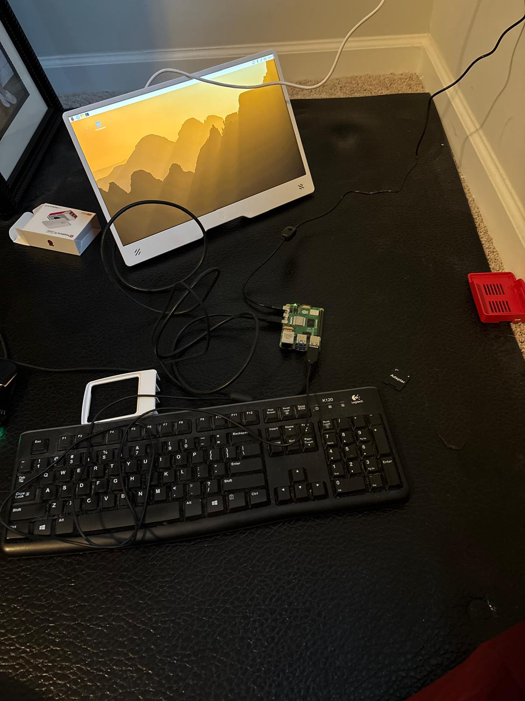
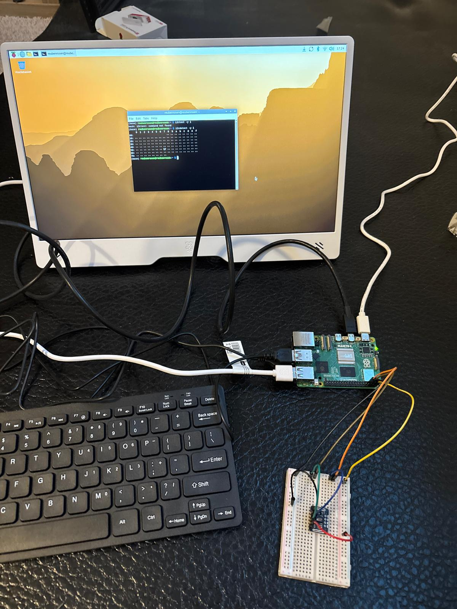
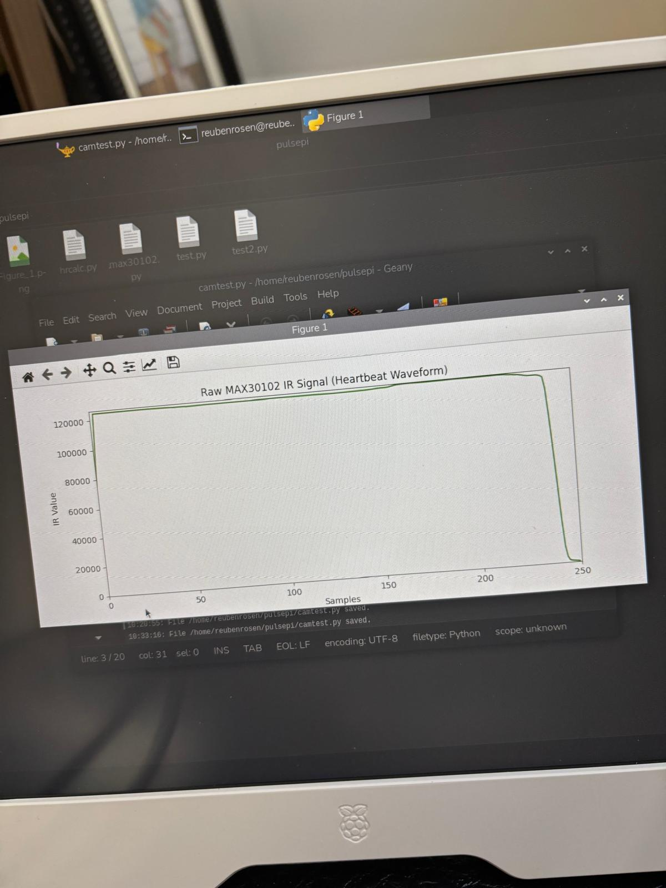
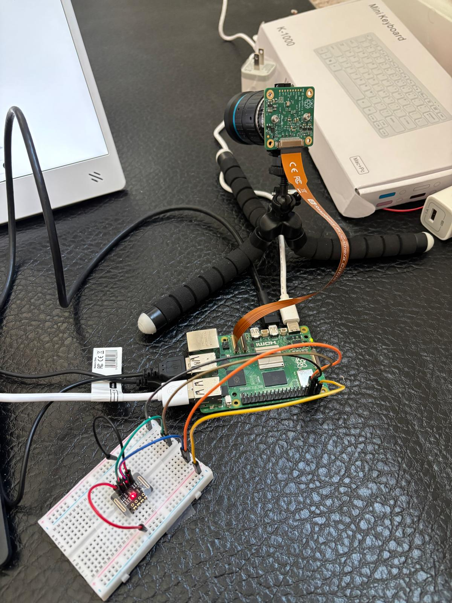

Phase 1 — Initial Setup
Completed- Raspberry Pi 5 Setup Complete.
- Added peripherals for easier access as well as a monitor for future data visualization.
- Running Rapsberry Pi Desktop OS.

Phase 2 — First Prototype
Completed- Setup of Max30102 sensor complete.
- Soldered the pins onto the sensors but it did not work. As an alternative I used jumper wires and taped the sensor tightly for stability.
- Made a simple code which plots change in raw signal data when finger is placed on the sensor.


Phase 3 — RPi High QualityCamera Installation
Completed- Setup 16mm camera on a tripod so that green light reflected from the hand can be captured.
- Tripod does not seem well balanced and the camera is heavy, would need better support in the future to hold it in place.
- 16mm seemed too strong for the camera test, and would have to be improvised by placing the source of light far away. Alternatively, I plan to use 6mm to see if it detects closer objects with less blur
- Adding logging and error handling

Phase 4 — Validation
Planned- Stress testing
- Power consumption measurements

Phase 5 — Final Build
Planned- Final enclosure
- Documentation and release